The Story of the DMC DeLorean
This is the DMC DeLorean. If nothing else, most of us will know this car from its iconic role as the time machine from the Back to the Future movies. As far as critical vehicles in cinema goes, the DeLorean rides with the best of them, alongside Star Wars’s Millenium Falcon and The Interceptor from Mad Max. It is a car that we assign as much personality to as we do the paid actors it appears alongside. But while many will recognize it from the B2TF trilogy, far less are familiar with the car in real life,the man who created it , and the bizarre drama behind it. The story of John Z. DeLorean and his iconic car is one of celebrities, corporate sabotage, a war-torn Northern Ireland, the war on drugs, supermodels, cocaine smugglers, the FBI, and finally, the utter and complete failure of one of the most famous vehicles in automotive history.
John Z. DeLorean
Enter the main character of our story: John Z. DeLorean. Human DeLorean is, obviously, responsible for car DeLorean. But aside from that he can almost be considered single-handedly responsible for some of the biggest landmarks of automotive history. Particularly, the creation of the “muscle car” genre. Muscle cars are kind of vaguely defined as mid-sized cars with big honkin’ engines. Iconic flagship muscle cars include the Ford Mustang, Dodge Challenger, you know, loud, fast, vroom vroom machines that your mom wrinkles her nose at. But the one that started it all was the Pontiac GTO in 1964, and this was DeLoreans first major contribution to the industry.
Pre-GTO, the Pontiac branch of GM was on its decline, seen by the masses as an amorphous, boring, “granny” brand that didn’t quite fit in the line-up. It was surprising that DeLorean would pick to work at Pontiac when approached by GM with a job offer at his choice of any of the company’s 5 divisions. At the time, nobody had even considered cramming big engines into midsize cars, and GM even went as far as forbidding it (Granny wants a car that goes from 0-60 in 7.7 years, not 7.7 seconds). But DeLorean, determined to make a name for himself and break into the hip youngster market, would characteristically jump through loopholes to bring this car to reality by making it an option to the pre-established Pontiac Tempest. Imagine taking a bigass truck engine and stuffing it under the hood of your mom’s camry. This is, in essence, what DeLorean did to the Tempest. The GTO ended up selling 9 times the initial production in the first year (that’s business-talk for doing really freaking well), saving the failing Pontiac brand and transforming it from the granny brand into GM’s designated performance division. The success of the GTO brought DeLorean into the public eye.
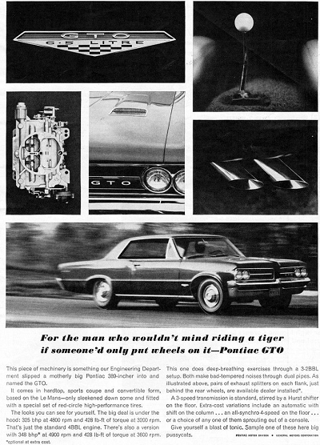 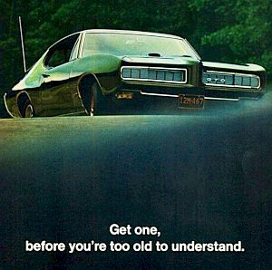 Two advertisements for the Pontiac GTO from 1964 (Top) and 1968 (Bottom)
In the following years, DeLorean just kept climbing the ladder. His braggadocious attitude and loud charisma turned him into a celebrity and his numerous patents and innovations turned him into an industry icon. He would go on to head the design of the Pontiac Firebird in ‘67, the Grand Prix in ‘69, and he became the youngest division head in GM history at the age of 40. All of this was just fine and dandy, except that, in addition to being GM’s golden boy, everyone in the company HATED his ass. See, DeLorean wasn’t your typical 3-piece-suit businessman. He was a pop culture icon who thrived on attention, risk-taking, and surfing on a wave of fat paychecks and blown-out ego. Instead of a suit and tie, DeLorean wore turtlenecks. He had cool-guy sideburns and married young supermodels. He went on interviews openly bragging about his sex drive (gross, I know). He led ad campaigns that featured tigers and would openly challenge the competition by touting the abilities of his vehicles to beat anything that anybody else had to offer (even if they couldn’t). DeLoreans behavior and “fuck you, pay me” attitude rubbed all the GM executives wrong, but the numbers he was able to produce made him untouchable. That is until they didn’t.
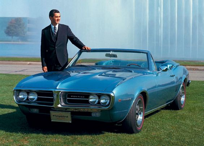 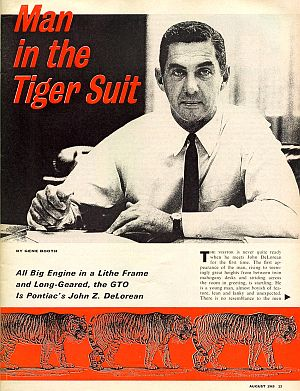 (Top) Delorean, posing with the Pontiac Firebird, (Bottom) Dude really liked his tigers
If you broke out the ol’ Ouija board and asked him yourself, John DeLorean would probably say that he quit his job at GM because he was sick of the politics and the corporate song and dance. Some other sources will say that he was fired for publicly shit-talking his co-workers and superiors. Either way, DeLorean left GM (and his multi-million dollar salary) in 1973. That same year, (after some plastic surgery, weight-lifting, and a new supermodel wife,) he founded DeLorean Motor Company (DMC) to build his dream car.
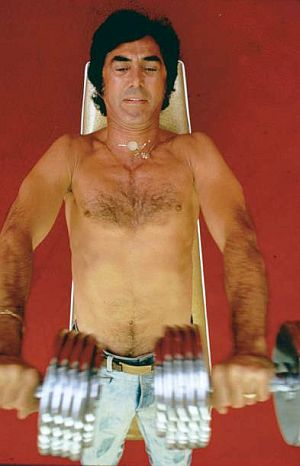 I wasn’t joking about the weight lifting, this was a photo of him from an early ‘70s magazine. Compare the Firebird pic above and you can see his new chin, too
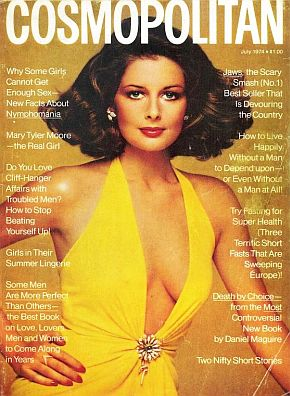 Christine Ferrare, world famous supermodel and DeLorean’s third wife
The idea of starting a brand new, mass production car brand in 1973 was lunacy. That last time a new, fully independent car brand had shown up on the market had been Chrysler in the 1920s, and even they went bankrupt along the way. But DeLorean was determined to be the David to GM’s Goliath. He had long-since had plans tucked away to build his dream car, a “sports racing car that’s designed to have an eternal life.” This car, as you may have guessed, would eventually evolve into the DMC DeLorean. After stealing Pontiac’s chief engineer, Bill Collins, they got straight to work, and in 1976, the first prototype of the DMC-12 rolled out for debut.
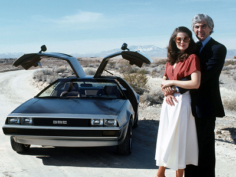 Delorean and Ferrare posing with the DMC-12 design car.
The DMC-12 was the original title of the car now known simply as the DeLorean. The number referring to its original goal of having a retail price of $12,000 ($54,000 in 2019). It featured a stainless steel body (since paint is for losers). It had angles, it was low, it had gull-wing doors because horizontal doors are for peasants. The prototype was received with such high praise that critics were claiming it to be “as significant as the Ford Model A.” This was supposed to be the affordable sports car for the people, and waiting lists formed almost immediately, with many willing to pay up to $10,000 over retail in order to get their hands on one. The hype was unbelievably dramatic for this car, and how could it not, with John Zachary DeLorean’s name on it? As part of a promotional deal with American Express, they even advertised a special edition DeLorean, plated with 24 karat gold which could be bought for $85,000 ($240,000 in 2019). Creating a gold-plated car with your own name on it is by far one of the biggest flexes I can think of, and completely in-character for the kind of guy DeLorean was. He opened his product to investors, pulled in legendary design engineers Collin Chapman and Giorgetto Giugiaro, and began looking for a location to build his production plant, taking us to the unlikely location of Northern Ireland.
With the incentive of £100 million from the Northern Ireland Civil Rights Association, DeLorean decided to set up shop in Dunberry, Northern Ireland. At this time, Northern Ireland was effectively a warzone filled with shootings, bombings, and mass unemployment - it was violence in the streets. People were dying and families were starving here, but none of this would deter Mr. DeLorean McBadass. Under a 2 year timeframe, with a completely inexperienced workforce, rapidly approaching release date, and only a prototype to work off of, the DeLorean factory began production.
A scene from Northern Ireland during “The Troubles”
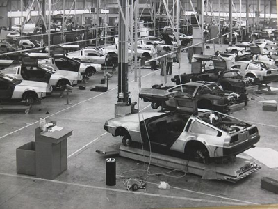 The DeLorean factory was a peaceful outpost in a sea of violence. Catholics and Protestants reported peacefully to work side by side, and the riots never found their way into the factory walls. It was considered by many to be something of a social experiment.
Just to recap the situation, we now have an American car, designed by an Englishman, an Italian, and an American, which would be powered by a French/Swedish engine, going straight into mass production in war-torn Northern Ireland led by a workforce of 2,000 inexperienced employees. What could possibly go wrong?
Everything. Absolutely everything. There were countless setbacks, delays, and cost-overruns in the making of the car. When it was finally released for sale, it was a shadow of its original design in every way except visually. The DeLorean that reached the consumer was a poor-handling, slow ride riddled with quality control and design problems. Hitting the market years behind schedule in 1981, it was the disappointment of the decade. The panel gaps were ugly and inconsistent. The engine was a rear-mounted, 2.85 L (174 cu in) V6 made specifically for the DeLorean by Peugeot, Renault and Volvo Cars (PRV). It was rated at 130hp which is grossly underpowered for anything trying to call itself a sports car. The electrical system could barely keep up with its own demand leaving people stranded with dead batteries. The doors had countless issues, some reports even stating that drivers were getting trapped in their own vehicles. It did terribly in safety road tests, and on top of it all, its release was met by a recession which hurt the car market as a whole.
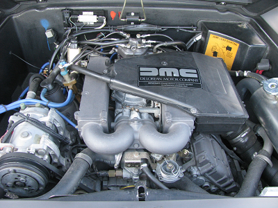 The DeLorean rear-mounted engine
As sales failed to come anywhere close to projections, John DeLorean decided to ramp up production, nearly doubling the production output of the car, and by February of 1982, DMC was $175 million in debt. The Dunberry factory was placed into receivership (forced bankrupcy) with 7000 unsold cars filling its warehouses. And then In October, John Z. DeLorean was arrested on charges of drug trafficking…
Unsold DeLoreans stored in a warehouse, 1982
We can now briefly introduce a new scumbag character, one Jeff Hoffman. Hoffman was a major narcotics trafficker facing some serious charges who also happened to be an ex-neighbor of DeLorean. In an attempt to lessen charges against himself, he was working as an informant for the FBI. This was right around the time that Reagan announced the “War on Drugs” and, as such, catching big time drug dealers was all the rage. Hoffman approached the desperate DeLorean, arranging a deal where DeLorean would finance a major import of 220lb of cocaine, worth $24 million. In what would become the biggest trial of the year, DeLorean was set up with 59lb by the FBI and charged with 8 counts of drug-related charges. Being such a high profile person, the FBI and Hoffman were desperate to do everything in their power to take down DeLorean, and in said desperation, outright framed him for trafficking. In the end, DeLorean would be found not guilty on all charges, but the trial and negative publicity had already done its damage. The company was bankrupt, and with only 3 years of production, the DMC DeLorean was discontinued.
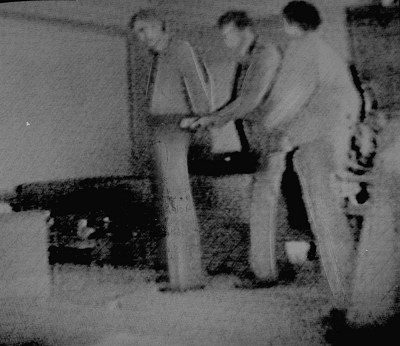 Hidden camera footage of DeLorean’s arrest
The DMC DeLorean’s astounding failure made it the laughing stock of the industry. It, along with its creator, had just barely enough time to slip out of memory before the release of Back to the Future in 1985, featuring a modified DeLorean as the iconic time machine. The wild success of the film instantly turned the car into a collectors item. Had DeLorean behaved even slightly more conservatively, and not been the dramatic risk-taker he had become so well known for, this movie would have easily saved him, his company, and his dream from complete demise.
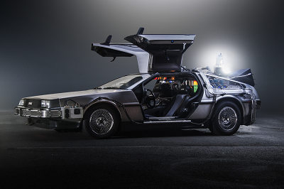 Side view of the infinitely badass DeLorean time machine
Nowadays, DeLoreans are desirable collector cars with a strong fanbase who are quick to defend the car, its shortcomings, and its creator. With so many cars unsold, and warehouses filled with spare parts, servicing these cars was actually very doable, and still is today with 4 officially recognized dealerships across the country. There is, of course, also a strong market for customizing DeLoreans into Back to the Future replicas (complete with a flux capacitor and everything).
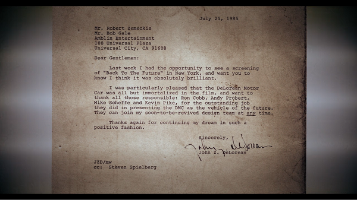 A 1985 letter to director Rober Zemeckis and screenwriter Bob Gale from DeLorean, thanking them for their portrayal of his car in their film
Subscribe to UMass Amherst Makerspace
Get the latest posts delivered right to your inbox